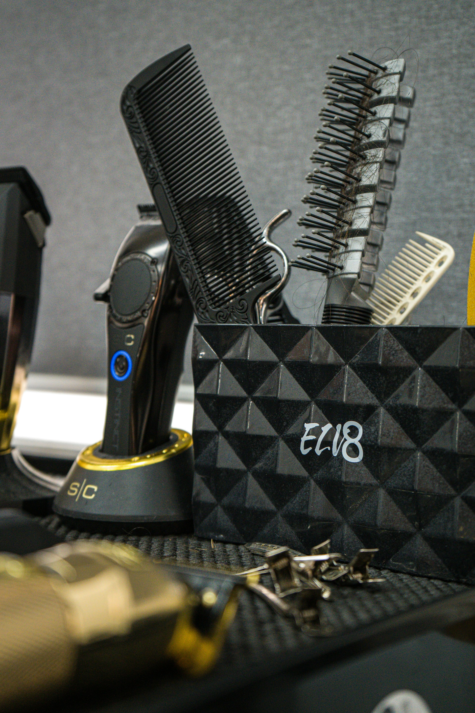

Our Story
Iron & Comb opened its doors on Bree Street in 2019 with two chairs, one mirror and a simple idea: do the fundamentals well. The founders, both trained barbers with over a decade of combined experience, wanted to build a shop where the craft came first and every client left looking and feeling sharper than when they walked in.
Seven years later, we operate four chairs and serve clients from across Cape Town. The team has grown, the product range has expanded, and the booking system has moved online, but the approach has not changed. We still believe a good haircut starts with a conversation and ends with attention to the details most people miss.
The name Iron & Comb reflects the tools of the trade. Iron for the straight razor and the weight of tradition. Comb for the precision and the care. Together, they describe how we work: with respect for the craft and respect for the person sitting in the chair.

Our Philosophy
We are not the cheapest shop in Cape Town and we do not try to be. We are a shop that takes its time, uses proper tools, and trains its barbers properly. Here is what that means in practice.
Consistency over trends
A great haircut should look good three weeks after it is cut, not just three hours. We focus on structure, weight distribution and clean lines that grow out well.
Honesty in the chair
If a style will not work with your hair type, face shape or lifestyle, we will tell you. We would rather spend ten minutes finding the right cut than forty minutes delivering the wrong one.
Hygiene without compromise
Tools are sterilised between every client. Capes are fresh. Stations are cleaned after each appointment. Straight razor blades are replaced for every shave. This is not optional.
Meet the Barbers
Each barber on our team brings a distinct background and speciality. You are welcome to request a specific barber when booking, or we can match you with whoever is best suited to the service you want.
Come Visit the Shop
We are located on Bree Street in the centre of Cape Town, a short walk from the Greenmarket Square area. Walk-ins are welcome when availability allows, but we recommend booking ahead, especially on Fridays and Saturdays.
123 Bree Street, Cape Town, 8001
Tuesday to Friday: 9:00 AM to 6:00 PM
Saturday: 9:00 AM to 5:00 PM
Sunday and Monday: Closed